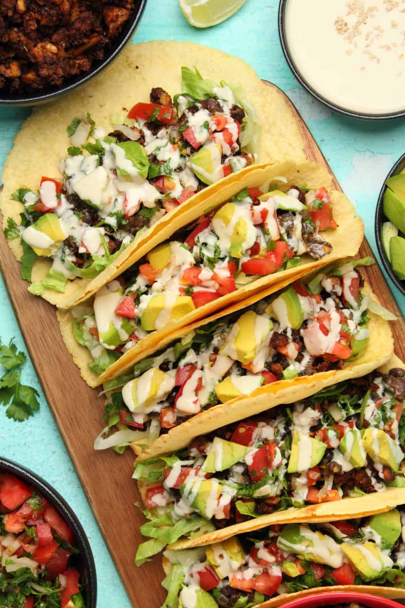

Vegan Tacos

Description
These versatile vegan tacos are packed with black beans, vegan taco meat,
pico de gallo and avocado and topped with a tahini sauce.
Filling, colorful and delicious!
We used a vegan taco meat as well as black beans
for the protein, some pico de gallo salsa, shredded lettuce,
chopped avocado and a fabulous tahini sauce to drizzle over the top.
Ingredients
- Vegan Mince
- Pico De Gallo
- Tahini Dressing
- 1/2 Medium Onion (white, yellow or brown)
- 1 Tbsp Olive Oil
- 1 tsp Crushed Garlic
- 1/4 tsp Cayenne Pepper
- 1/4 tsp Chilli Flakes
- 1/2 tsp Cumin Powder
- 15 oz Can Black Beans
- Salt and Pepper (to taste)
- 2-3 cups Shredded Lettuce
- 2 Medium Avocados
- 12-16 Tortillas
Steps
-
Add the chopped onion to a pan along with the olive oil, crushed garlic,
cayenne pepper, chili flakes and ground cumin and sauté until the
onions are softened. Add in the black beans and sauté with the onions
and spices until heated through. If it’s getting too dry in the pan then
add in a little water. Add salt and pepper to taste.
-
Prepare your shredded lettuce and chopped avocado.
-
Heat your tortillas via your preferred method, or by lightly frying in a
pan or stacking them up and covering in foil and baking in the oven at 180°C
for around 15 minutes until heated through.
-
Assemble by adding some shredded lettuce to a tortilla, followed by some
vegan taco meat then black beans then pico de gallo, then chopped
avocado and top with a drizzle of tahini sauce.